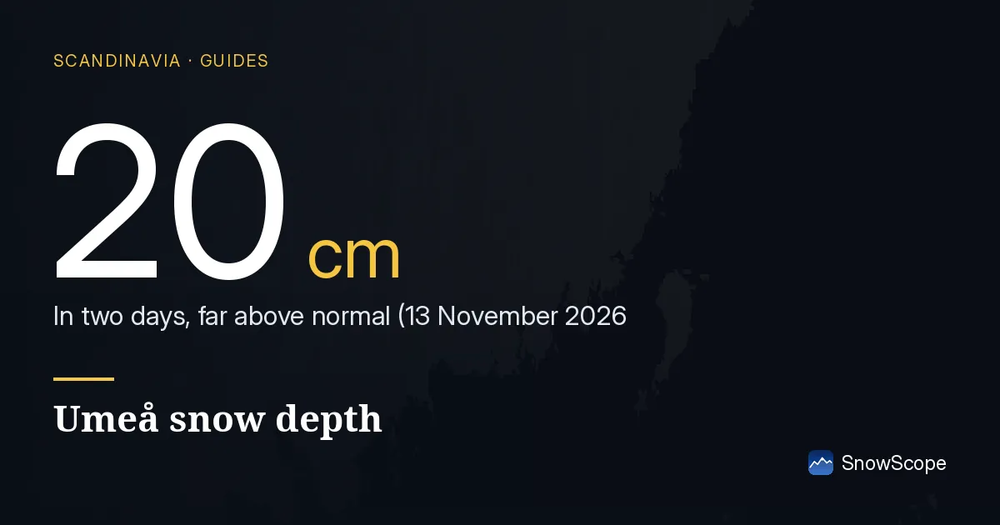
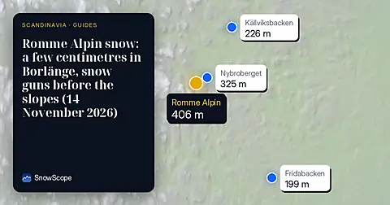

Umeå snow depth: 20 cm in two days, far above normal (13 November 2026)
Umeå's snow arrived suddenly and deep. Four days ago the ground was bare; now the city holds 20 cm. This is what normally takes until December to build up.
See the live snow forecast for Umeå in the SnowScope appSnow depth, powder alerts and the 3D map, free.
How fast the snow came
The jump was visible in one measurement cycle. Umeå-Röbäcksdalen, the station on the city's western side at 10 m elevation, saw nothing on 9 November, then 5 cm on 12 November, then 20 cm on the morning of 13 November. No gradual drift—one solid event.
The same pattern held across the whole district. Nordanbäck, 49 km inland at 185 m, went from 8 cm to 22 cm in one day. Vännäs jumped from zero to 18 cm. Even Rickleå on the coast, which caught less, went from bare ground to 12 cm. This was not local; it was regional.

Timing matters: ahead of schedule
Early November snow is rare for Umeå. In the past 46 winters, snow lay on the ground on 13 November only 26 times—just over half. When it did, it usually meant 1 cm or less. Only one winter in four had reached 5 cm by this date. The deepest 13 November on record was 34 cm, so today's 20 cm sits high.
The calendar tells the story. Umeå normally reaches 20 cm only by early December. The middle value for 1 December is 6 cm; by 15 December it climbs to 10 cm. Mid-January brings the season's typical peak of about 25 cm. This November snow has fast-forwarded two weeks of winter.
What the next days will do
The weekend favours keeping snow. Saturday stays dry, with night temperatures near -10 °C and only mild thaw in the afternoon. Sunday keeps its cover, though it warms to around 4 °C. Neither day brings rain.
Monday is the turning point. Rain will fall—around 8 to 9 mm—and temperatures will rise to about 6 °C. Snow at 20 cm depth will not vanish in one day, but it will become heavy, dense and hard-packed. If it freezes overnight on Tuesday, the surface will turn to ice. Expect shrinkage, not disappearance.
Where the snow sits deepest
Slight elevation does matter here. Nordanbäck at 185 m holds the deepest snow at 22 cm, while the city station at 10 m has 20 cm. Balsjö, at 201 m inland, tells a different story with only 8 cm, so height alone does not explain the spread. The snowfall was wider than deep variation.
Ground conditions vary too. Near the coast at Rickleå (12 m elevation) the snow sits on probably unfrozen earth. Inland at Nordanbäck and Balsjö on higher ground, the base is likely colder. This matters for drainage and settling over the next few days.
Winter's false start?
This is early snow for Umeå, but not unprecedented. The 2023-24 winter also had 7 cm by 13 November. The difference is depth: 20 cm is roughly three times that figure. The past five years saw mostly bare ground on this date, so this arrival stands out.
What happens next depends on whether this was the start of persistent winter or a brief intrusion. The rain on Monday will test the snow's grip. If temperatures stay low and more snow falls, the cover will hold. If rain continues and mild air lingers, this white November may be a memory by December.
Tips for skiers
- Saturday is ideal for first outings: dry, cold, and the white ground is fresh. Bring good grip underfoot as the base is thin.
- Monday's rain and mild air will soften the snow. By Tuesday morning, surfaces will freeze hard; use studded shoes or ice grips on outdoor stairs and paths.
- Inland roads on unfrozen ground may be soft or muddy beneath the new snow. Drive slowly on gravel and forest tracks.
- Bring layers: Saturday's cold (-10 °C at night) will give way to Sunday warmth. The switch happens fast in transition weather.
- Check local avalanche bulletins before heading to any steep terrain in the nearby hills.
About these numbers
Resort snow depths are the deepest snow on the resort's upper slopes on the date shown; they are estimates for an area, not a measurement at one point. Forecasts can change. Always read the official avalanche bulletin before going off-piste.
Cite this report
For research, teaching or the press: the numbers and charts are free to reuse under CC BY 4.0 with this citation.
SnowScope (2026), Umeå snow depth: 20 cm in two days, far above normal (13 November 2026), https://snowscope.app/blog/en/2026/11/umea-snow-depth-13-november-2026.html, accessed 2026-11-13
SnowScope (Atlas Labs). (2026, November 13). Umeå snow depth: 20 cm in two days, far above normal (13 November 2026). SnowScope snow reports. https://snowscope.app/blog/en/2026/11/umea-snow-depth-13-november-2026.html
BibTeX
@misc{snowscope2026umeasnowdepth13november2,
author = {{SnowScope (Atlas Labs)}},
title = {Umeå snow depth: 20 cm in two days, far above normal (13 November 2026)},
year = {2026},
month = nov,
howpublished = {\url{https://snowscope.app/blog/en/2026/11/umea-snow-depth-13-november-2026.html}},
note = {Published 2026-11-13 19:49 UTC; accessed 2026-11-13}
}· CC BY 4.0 · Methods, data and tools →
Follow Umeå
Free: a message when fresh snow is coming, and the forecast every morning.
More snow reports

Rovaniemi's first snow arrived on 13 November: 7–8 cm at ground level. Here's what husky farms charge, when they open, and how to walk your dog safely in the Arctic.

Røros sits at 630 m on a mountain plateau. On 13 November, 11 cm lay measured at the weather station—thin but real winter snow for the sled-dog season.

Romme Alpin received patchy early snow on 13 November 2026. Borlänge station 12 km away measured 4 cm; Ludvika had 10 cm. Rain dominates the forecast.